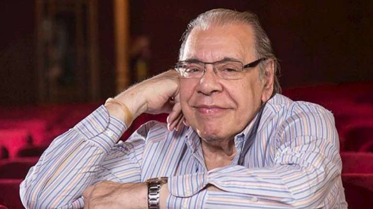

Maria Eugenia Vidal "La toma de deuda del Gobierno es más alta que la de Macri"


Murió a los 82 años Enrique Pinti
Enrique Pinti murió durante la madrugada de este domingo, a los 82 años, en el Sanatorio Otamendi, según confirmaron a Infobae el empresario teatral Carlos Rottemberg y Cipe Fridman, amiga y asistente del cómico. “Elegimos despedir a Enrique Pinti -enorme referente de esta Casa Teatral- recordando su última marquesina. Finalmente su salud no le permitió concretar el ‘Muy pronto’ anunciado. Sin dudas, Enrique protagoniza hoy uno de los momentos tristes de la historia del teatro argentino”, se publicó en la cuenta de Twitter del Multiteatro Comafi, junto a una foto del cartel que anunciaba un próximo show que tenía pensado hacer el humorista.